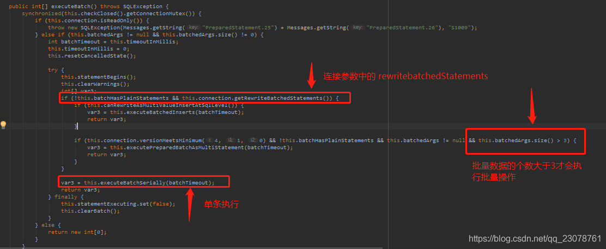

解决Spring的jdbcTemplate.batchUpdate()执行慢的问题
发布时间：
本文字数：343 字 阅读完需：约 1 分钟
关于jdbcTemplate.batchUpdate（）执行慢的原因
公司有个需求，要对mysql生产库中的400W+数据进行洗库，做批量update操作 。于是果断选择了jdbcTemplate.batchUpdate（）。测试库也就2000多条记录。然后迫不及待的开始码了
上代码吧
// 数据库连接
# jdbc
spring.datasource.type=com.alibaba.druid.pool.DruidDataSource
spring.datasource.driver-class-name=com.mysql.jdbc.Driver
spring.datasource.url=jdbc:mysql://localhost:3306/test?characterEncoding=utf-8
spring.datasource..username=root
spring.datasource..password=root
spring.datasource..initialSize=5
spring.datasource..minIdle=1
spring.datasource..maxActive=20
spring.datasource..maxWait=60000
spring.datasource..timeBetweenEvictionRunsMillis=60000
spring.datasource..minEvictableIdleTimeMillis=300000
@Autowired
private JdbcTemplate jdbcTemplate
...
// 核心代码如下
jdbcTemplate.batchUpdate(sql.toString(), new BatchPreparedStatementSetter() {
@Override
public void setValues(PreparedStatement pstmt, int i) {
VehicleInfo vehicleInfo = list.get(i);
try{
pstmt.setString(1, user.getUserName());
...
}catch (Exception e){
e.printStackTrace();
}
}
@Override
public int getBatchSize() {
return list.size();
}
});
测试环境才2500+条记录就执行了13秒多？有问题啊
然后打开batchUpdate的源码一探究竟!

解决方法
问题就在这里，如果数据库连接参数中不添加rewriteBatchedStatements 参数,MySQL Jdbc驱动在默认情况下会无视executeBatch()语句，截图最下边那行源码 this.executeBatchSerially(batchTimeout) 会一条一条的执行，只有把rewriteBatchedStatements参数置为true, 驱动才会帮你批量执行。
注意：MySQL Jdbc驱动保证5.1.13以上版本的驱动，才能实现高性能的批量插入 。在批量更新操作中，如果数据大于3条才会批量执行，否则也是会单条执行的，这个可以到源码com.mysql.jdbc.PreparedStatement中查看。
修改参数
// 数据库连接
spring.datasource.url=jdbc:mysql://localhost:3306/test?characterEncoding=utf-8&rewriteBatchedStatements=true
重新执行批量操作，果然，测试环境2000+条数据只用0.5s ，对比一下效果还是很显著的。
Powerd by YlBlog(玉龙博客)